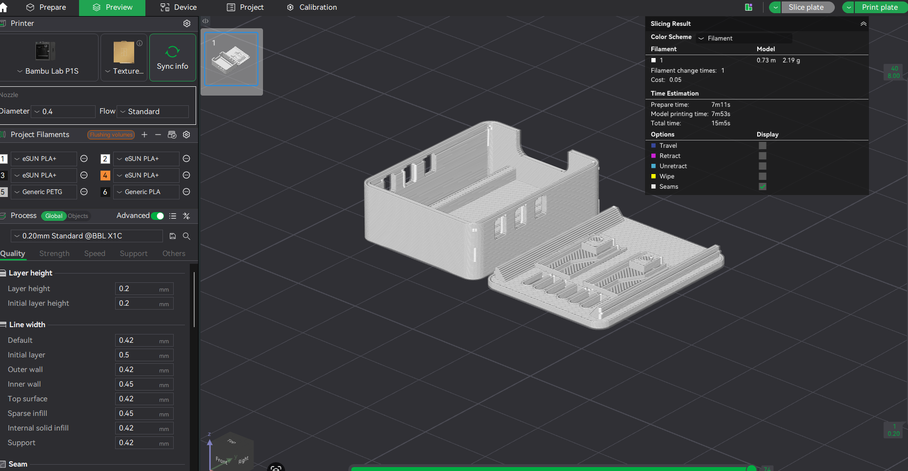

Prototype 1
This is the first prototype of the ESP32-C3 Zero case. Below is my prototyping process from the initial sketch to the final 3D model.
Initial Sketch

3D Model

3D Print

Key features
- Strikes a good balance between complexity and simplicity. This balance will ensure the case was designed to be both professional and visually appealing, while maintaining useability and ensuring protection for the controller.
- Vents are appropriately sized and placed around areas which need the most ventilation.
- Buttons are easily accessible and provide tactile feedback when pressed.
Pros and cons
Pros
- The case has cutouts for all ports and buttons, allowing for easy access to the device's features.
- Vents are appropriately sized and placed around areas which need the most ventilation.
- Buttons are easily accessible and provide tactile feedback when pressed.
Cons
- The case does not fully cover the exposed pins, which could lead to damage if the controller is dropped.
- Case may be bulkier than necessary due to the additional material needed for the cutouts.
Potential Improvements
Possible improvements centre around the exposed pins; the current design does not fully cover the pins so if the controller was dropped on a weird angle, it may damage the pins. A case where the pins are fully covered may lead to further design issues such as bulkiness and overengineering problems. I may explore a different version in next iterations with alternate pin variations.